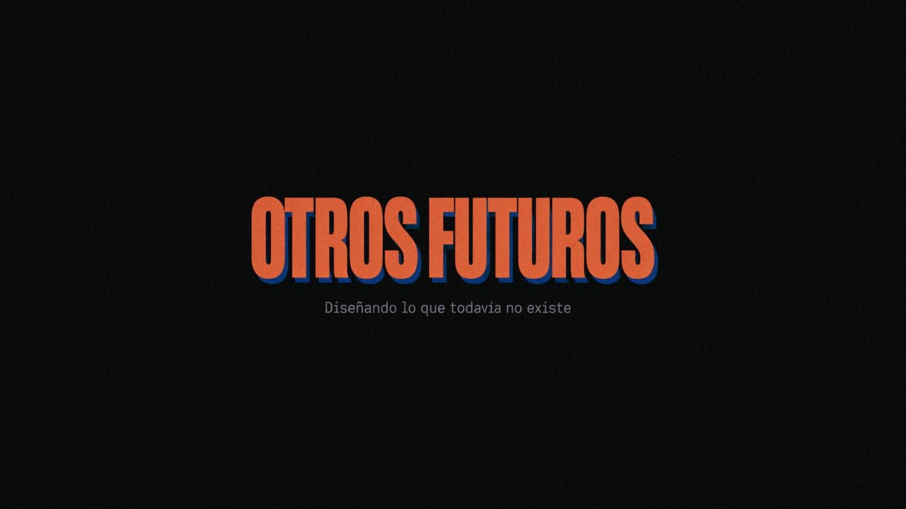

Otros Futuros
Futures design, design fiction, speculative design.
I’m a futures designer. I build prototypes and speculative artifacts for organizations that have to make decisions without knowing what comes next.
Weak signals from the present. Futures thinking methods. Speculative experiments, live. The orientation is toward making things: show future, don’t tell future.
What I’ve learned, what I’ve applied, what I’m still testing. From practice.
New content every week.